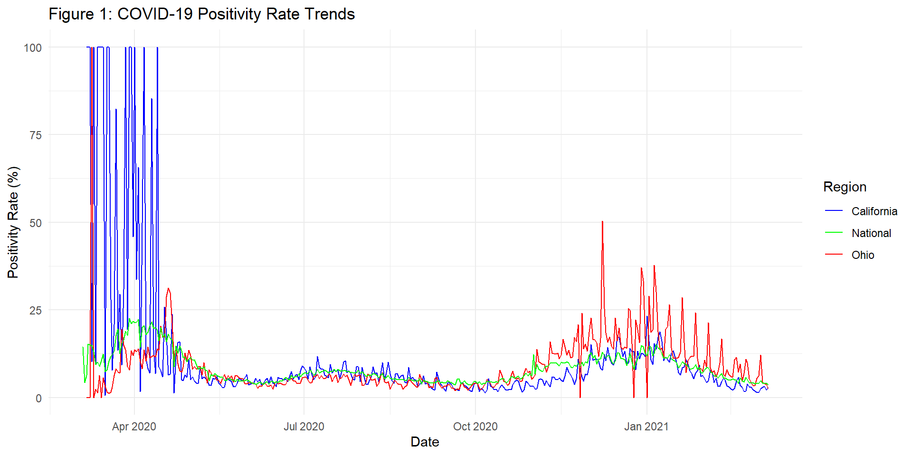
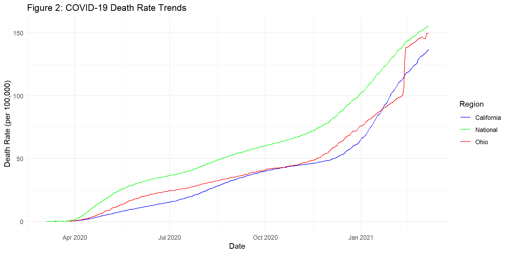
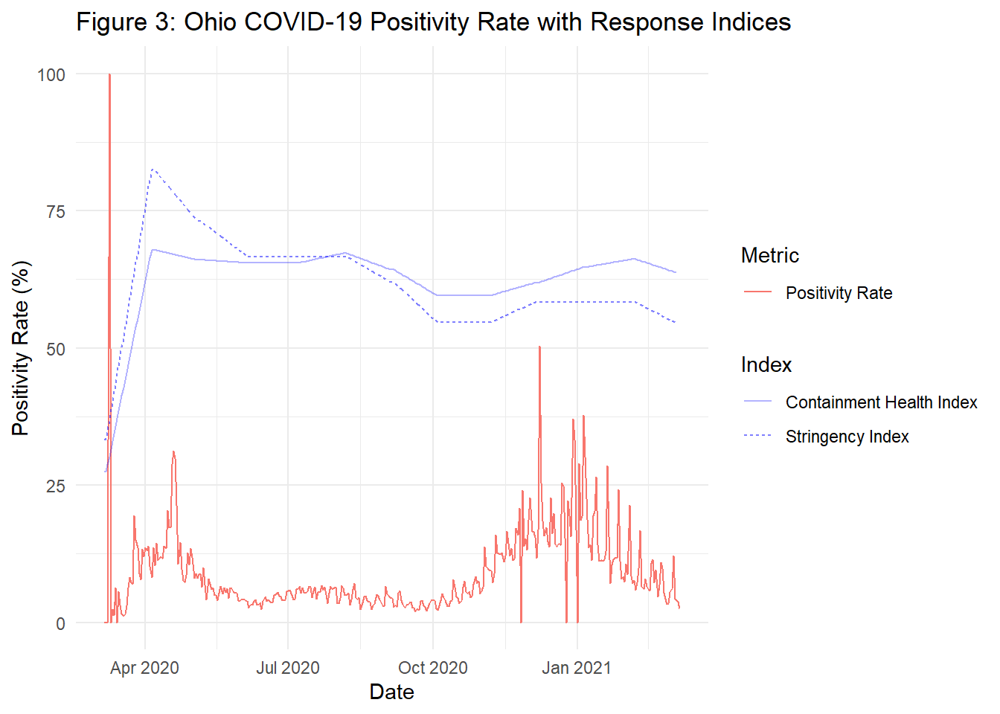
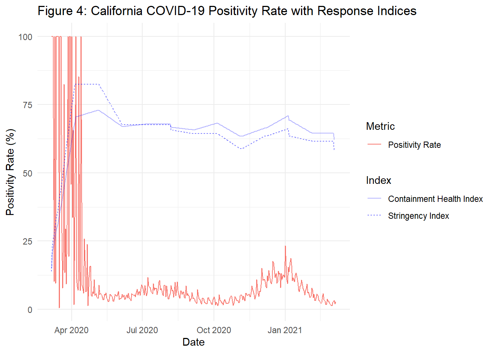
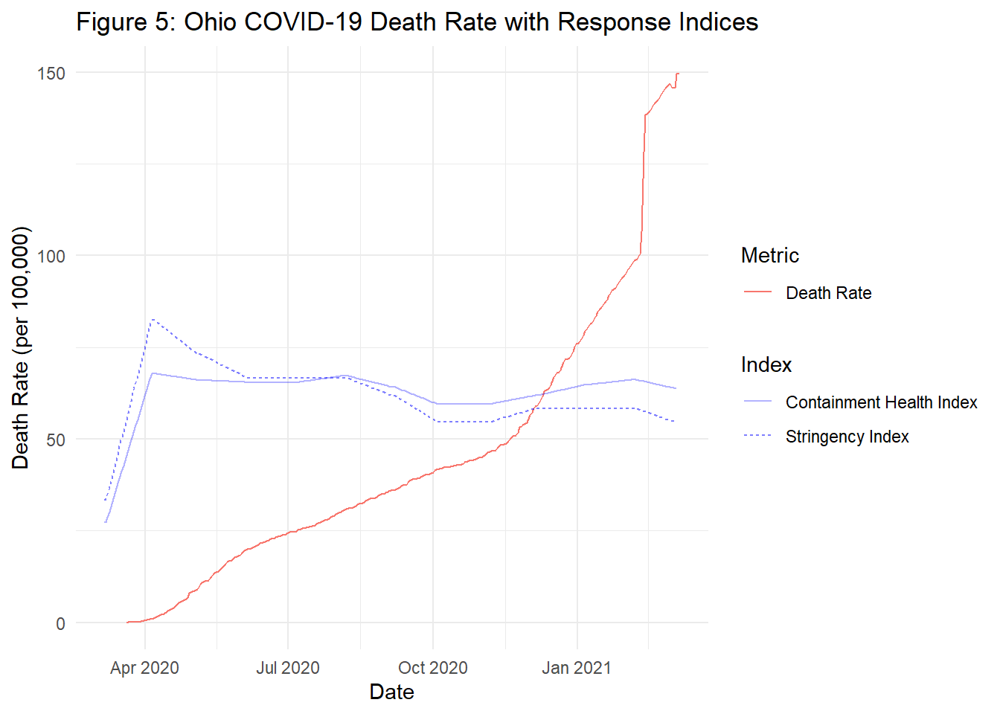
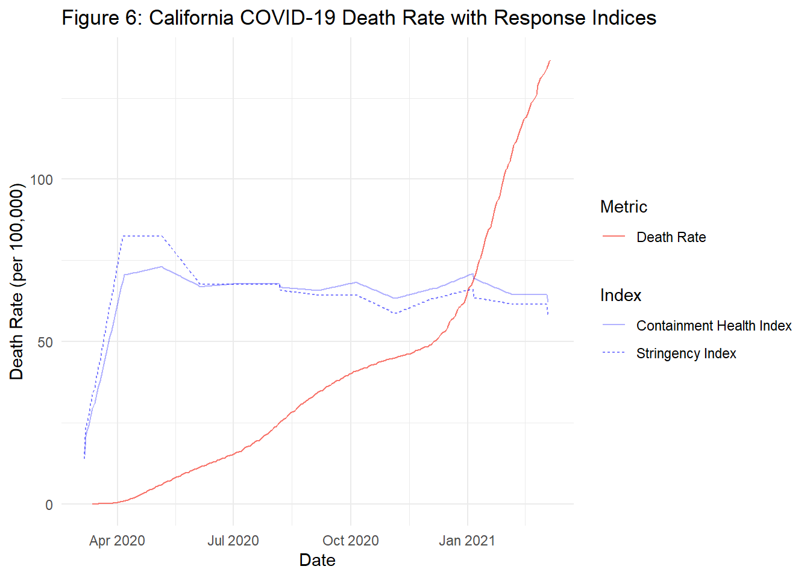

The COVID-19 pandemic has had lingering consequences since 2020. Key to the combat against this pandemic was the rollout of vaccines which had early access for healthcare workers in December 2020 but later became available to the general public in April 2021 (Center for Disease Control 2021). Prior to the vaccines, management was key in preventing the spread of COVID and varied from state to state. California and Ohio were chosen for this analysis because they represent contrasting approaches to pandemic management. California, with its large population (~39.5 million residents) and stringent measures, provides an example of an aggressive mitigation strategy. Contrarily, Ohio’s moderate, reactive approach offers insight into a more flexible response. This comparison highlights how different strategies influenced pandemic outcomes.
This analysis aims to determine the difference in COVID-19 test positivity rates and death rates between Ohio and California during 2020 until the point when vaccines were distributed which was approximately April 2021. By comparing these states’ trends with the national average, this analysis seeks to understand how both states managed the pandemic before the vaccines were made available and whether their approaches led to different outcomes.
Research Question
How did Ohio and California compare in their COVID-19 positive test rates and death rates prior to the widespread availability of vaccines, and how do these trends compare with national averages? To what extent did government intervention levels influence these patterns prior to vaccines?
Data Acquisition
The datasets are publicly available on “www.covidtracking.com/data/download”. They provide daily updates on COVID-19 statistics from all the United States. These variables measured include test positivity rates, death counts, hospitalizations, and other COVID-related metrics. The data ends March 2021 just prior to when vaccines became publicly available in April 2021. For population estimates, the US Census Bureau was used for their annual state population estimates for 2020 to calculate death rates.
Data from the Oxford COVID-19 Government Response Tracker (OxCGRT) was obtained to provide systematic data on government responses to the COVID-19 pandemic. This database includes indicators such as the Stringency Index and the Containment Health Index. The Containment Health Index is a composite measure, ranging from 0 to 100, that reflects the strictness of health-related interventions, such as testing policies, contact tracing, and healthcare investment. This measure provides a standardized way to compare public health responses across states and over time.
setwd("C:/Users/patri/OneDrive/Documents/MPH Sem 3/Health Data Science/PM566-labs/PM566-final-project/")
library(dplyr)
library(ggplot2)
library(knitr)
library(kableExtra)
library(readxl)
library(tidyr)
library(zoo)
california_data <- read.csv("C:\\Users\\patri\\OneDrive\\Documents\\MPH Sem 3\\Health Data Science\\PM566-Project\\Midterm Data\\california-history.csv")
ohio_data <- read.csv("C:\\Users\\patri\\OneDrive\\Documents\\MPH Sem 3\\Health Data Science\\PM566-Project\\Midterm Data\\ohio-history.csv")
national_data <- read.csv("C:\\Users\\patri\\OneDrive\\Documents\\MPH Sem 3\\Health Data Science\\PM566-Project\\Midterm Data\\national-history.csv")Stringency Index and Health Containment Index values were extracted directly from the OxCGRT dataset, which provides systematic data on government responses to the COVID-19 pandemic. For missing values within the dataset, linear interpolation was applied to estimate intermediate values, ensuring continuity in the time series data.
timeseries_data <- read_excel("C:\\Users\\patri\\OneDrive\\Documents\\MPH Sem 3\\Health Data Science\\PM566-Project\\Midterm Data\\OxCGRT_timeseries_all_v1.xlsx")
timeseries_long <- timeseries_data %>%
pivot_longer(
cols = matches("^[0-9]{2}[A-Za-z]{3}[0-9]{4}$"),
names_to = "Date",
values_to = "Value"
)
timeseries_long$Date <- as.Date(timeseries_long$Date, format = "%d%b%Y")
stringency_data <- read_excel("C:\\Users\\patri\\OneDrive\\Documents\\MPH Sem 3\\Health Data Science\\PM566-Project\\Midterm Data\\OxCGRT_timeseries_all_v1.xlsx", sheet = "StringencyIndex")
containment_data <- read_excel("C:\\Users\\patri\\OneDrive\\Documents\\MPH Sem 3\\Health Data Science\\PM566-Project\\Midterm Data\\OxCGRT_timeseries_all_v1.xlsx", sheet = "ContainmentHealthIndex")
date_cols_stringency <- grep("^\\d{2}[A-Za-z]{3}\\d{4}$", colnames(stringency_data), value = TRUE)
date_cols_containment <- grep("^\\d{2}[A-Za-z]{3}\\d{4}$", colnames(containment_data), value = TRUE)
start_date <- "04Mar2020"
end_date <- "07Mar2021"
stringency_filtered <- stringency_data %>%
select(CountryCode, RegionCode, RegionName, all_of(date_cols_stringency[which(date_cols_stringency >= start_date & date_cols_stringency <= end_date)]))
containment_filtered <- containment_data %>%
select(CountryCode, RegionCode, RegionName, all_of(date_cols_containment[which(date_cols_containment >= start_date & date_cols_containment <= end_date)]))
stringency_long <- stringency_filtered %>%
pivot_longer(
cols = all_of(date_cols_stringency[which(date_cols_stringency >= start_date & date_cols_stringency <= end_date)]),
names_to = "date",
values_to = "StringencyIndex"
) %>%
mutate(date = as.Date(date, format = "%d%b%Y"))
containment_long <- containment_filtered %>%
pivot_longer(
cols = all_of(date_cols_containment[which(date_cols_containment >= start_date & date_cols_containment <= end_date)]),
names_to = "date",
values_to = "ContainmentHealthIndex"
) %>%
mutate(date = as.Date(date, format = "%d%b%Y"))
indices_long <- stringency_long %>%
left_join(containment_long, by = c("CountryCode", "RegionCode", "RegionName", "date"), relationship="many-to-many")During cleaning, key variables, such as positivity rate and death rate, were calculated, and date formats were standardized. Missing data was also accounted for in these steps.
california_data$positivity_rate <- (california_data$positiveIncrease/california_data$totalTestResultsIncrease) * 100
ohio_data$positivity_rate <- (ohio_data$positiveIncrease / ohio_data$totalTestResultsIncrease) * 100
national_data$positivity_rate <- (national_data$positiveIncrease / national_data$totalTestResultsIncrease) * 100
ohio_population <- 11799448
california_population <- 39538223
national_population <- 331449281
california_data$death_rate <- (california_data$death / california_population) * 100000
ohio_data$death_rate <- (ohio_data$death / ohio_population) * 100000
national_data$death_rate <- (national_data$death / national_population) * 100000Date columns in each dataset were reformatted for better alignment.
california_data$date <- as.Date(california_data$date)
ohio_data$date <- as.Date(ohio_data$date)
national_data$date <- as.Date(national_data$date)
range(california_data$date, na.rm = TRUE)
range(ohio_data$date, na.rm = TRUE)
range(national_data$date, na.rm = TRUE)Rows with missing or implausible values (positivity rates > 100%) were adjusted accordingly.
california_filtered <- california_data %>%
filter(!is.na(date) & !is.na(positivity_rate))
ohio_filtered <- ohio_data %>%
filter(!is.na(date) & !is.na(positivity_rate) & totalTestResultsIncrease > 0) %>%
mutate(positiveIncrease = ifelse(positiveIncrease > totalTestResultsIncrease, totalTestResultsIncrease, positiveIncrease)) %>%
mutate(positivity_rate = (positiveIncrease / totalTestResultsIncrease) * 100) %>%
filter(positivity_rate <= 100)
national_filtered <- national_data %>%
filter(!is.na(date) & !is.na(positivity_rate) & totalTestResultsIncrease > 0) %>%
mutate(positiveIncrease = ifelse(positiveIncrease > totalTestResultsIncrease, totalTestResultsIncrease, positiveIncrease)) %>%
mutate(positivity_rate = (positiveIncrease / totalTestResultsIncrease) * 100) %>%
filter(positivity_rate <= 100)start_date <- as.Date("2020-03-04")
end_date <- as.Date("2021-03-07")
national_filtered <- national_filtered %>%
filter(date >= start_date & date <= end_date)
california_filtered <- california_filtered %>%
filter(date >= start_date & date <= end_date)
ohio_filtered <- ohio_filtered %>%
filter(date >= start_date & date <= end_date)Merging each filtered state dataset with OxCGRT indices to compare trends in positivity test rate and death rate to response indices.
timeseries_filtered <- timeseries_long %>%
filter(RegionName %in% c("California", "Ohio", "United States"))
timeseries_filtered$date <- as.Date(timeseries_filtered$Date)
ohio_combined <- ohio_filtered %>%
left_join(indices_long %>% filter(RegionName == "Ohio"), by = "date")
california_combined <- california_filtered %>%
left_join(indices_long %>% filter(RegionName == "California"), by = "date")Linear interpolation was used to address missing values from the OxCGRT dataset to allow better visualization.
california_combined$StringencyIndex <- na.approx(california_combined$StringencyIndex, na.rm = FALSE)
california_combined$ContainmentHealthIndex <- na.approx(california_combined$ContainmentHealthIndex, na.rm = FALSE)
ohio_combined <- ohio_combined %>%
mutate(
StringencyIndex = zoo::na.approx(StringencyIndex, na.rm = FALSE),
ContainmentHealthIndex = zoo::na.approx(ContainmentHealthIndex, na.rm = FALSE)
)In summary, the datasets from the COVID Tracking Project, U.S. Census Bureau, and OxCGRT were downloaded, cleaned, and merged to analyze COVID-19 positivity and death rate trends in Ohio and California. The OxCGRT dataset was filtered and extrapolated to include government intervention indices to assess the impact of policy on pandemic statistics. Although these indices and pandemic statistics are on different scales, combining them in one visualization allows for easy identification of patterns, such as potential decreases in stringency or containment measures following surges in death rates.
Summary of the Average COVID-19 Positivity and Death Rates Across Ohio, California, and the Entire United States
summary_california <- california_filtered %>%
summarise(
avg_positivity_rate = mean(positivity_rate, na.rm = TRUE),
avg_death_rate = mean(death_rate, na.rm = TRUE))
summary_ohio <- ohio_filtered %>%
summarise(avg_positivity_rate = mean(positivity_rate, na.rm=TRUE),
avg_death_rate = mean(death_rate, na.rm=TRUE))
summary_national <- national_filtered %>%
summarise(avg_positivity_rate = mean(positivity_rate, na.rm=TRUE),
avg_death_rate = mean(death_rate, na.rm=TRUE))
summary_table <- rbind(
California = summary_california,
Ohio = summary_ohio,
National = summary_national
)
kable(
summary_table,
col.names = c("Average Positivity Rate (%)", "Average Death Rate (per 100,000)"),
caption = "Table 1: Summary Statistics of COVID-19 Positivity and Death Rates by Region"
)| Average Positivity Rate (%) | Average Death Rate (per 100,000) | |
|---|---|---|
| California | 11.412588 | 40.27808 |
| Ohio | 8.970802 | 45.84663 |
| National | 8.346790 | 60.00300 |
Table 1 Analysis: This table presents the average COVID-19 positivity rates and death rates per 100,000 people for California, Ohio, and the national average during the pre-vaccine period. California overall had the highest positivity rate at 11.4% but had an overall lower death rate at 40.28 deaths per 100,000 people. Ohio was also higher than the national average for positivity rate at about 9.0% but had a higher death rate than California but was lower than the national average at 45.8 deaths per 100,000 people.
Plot for comparing the COVID-19 positivity rates between Ohio, California, and the entire United States
ggplot() +
geom_line(data = california_combined, aes(x = date, y = positivity_rate, color = "California")) +
geom_line(data = ohio_combined, aes(x = date, y = positivity_rate, color = "Ohio")) +
geom_line(data = national_filtered, aes(x = date, y = positivity_rate, color = "National")) +
labs(title = "Figure 1: COVID-19 Positivity Rate Trends",
x = "Date", y = "Positivity Rate (%)") +
scale_color_manual(values = c("California" = "blue", "Ohio" = "red", "National" = "green"),
name = "Region") +
theme_minimal()
Figure 1 Analysis: This figure shows the COVID-19 positivity rate trends for California, Ohio, and the national average from early 2020 to early 2021. Early in the pandemic, both California and Ohio displayed high variability in positivity rates, likely due to testing availability and early cases. After stabilizing, California’s rate was slightly higher than the national average and Ohio’s rate during the summer months. Starting around October 2020, California remained lower than Ohio and the national average which may be attributed to the stricter policies for gatherings during that time period.
Plot for comparing the COVID-19 death rates between Ohio, California, and the entire United States
ggplot() +
geom_line(data = california_filtered, aes(x = date, y = death_rate, color = "California")) +
geom_line(data = ohio_filtered, aes(x = date, y = death_rate, color = "Ohio")) +
geom_line(data = national_filtered, aes(x = date, y = death_rate, color = "National")) +
labs(title = "Figure 2: COVID-19 Death Rate Trends",
x = "Date", y = "Death Rate (per 100,000)") +
scale_color_manual(values = c("California" = "blue", "Ohio" = "red", "National" = "green"),
name = "Region") +
theme_minimal()
Figure 2 Analysis: This figure shows the cumulative COVID-19 death rates for California, Ohio, and the national average over time. Early in the pandemic, death rates rose more gradually in California than compared to Ohio and the national average, which may reflect the potential impact of its early and stringent policies. By late 2020, Ohio and California had similar death rates but then Ohio increased more rapidly than California around December 2020. The national death rate consistently was higher than both states, which highlights the variations in state-level policies and pandemic responses. California’s overall lower death rate throughout most of 2020 suggests that their stringent health measures may have mitigated mortality more effectively than Ohio’s moderate approach. This difference did not seem to matter during the winter surge as they both had similar rates and increases at the time.
Plots for trends in COVID-19 positivity rates for California and Ohio with stringency and containment indices
ggplot(ohio_combined) +
geom_line(aes(x = date, y = positivity_rate, color = "Positivity Rate")) +
geom_line(aes(x = date, y = StringencyIndex, linetype = "Stringency Index"), color = "blue", alpha = 0.5) +
geom_line(aes(x = date, y = ContainmentHealthIndex, linetype = "Containment Health Index"), color = "blue", alpha = 0.3) +
labs(title = "Figure 3: Ohio COVID-19 Positivity Rate with Response Indices",
x = "Date", y = "Positivity Rate (%)",
color = "Metric", linetype = "Index") +
theme_minimal()
ggplot(california_combined) +
geom_line(aes(x = date, y = positivity_rate, color = "Positivity Rate")) +
geom_line(aes(x = date, y = StringencyIndex, linetype = "Stringency Index"), color = "blue", alpha = 0.5) +
geom_line(aes(x = date, y = ContainmentHealthIndex, linetype = "Containment Health Index"), color = "blue", alpha = 0.3) +
labs(title = "Figure 4: California COVID-19 Positivity Rate with Response Indices",
x = "Date", y = "Positivity Rate (%)",
color = "Metric", linetype = "Index") +
theme_minimal()
Figure 3 Analysis: This plot depicts Ohio’s COVID-19 positivity rate over time in relation to the Stringency Index and Containment Health Index. Early in the pandemic, the positivity rate showed extreme variability which is likely due to testing availability and early case surges. The indices stabilized around mid-2020 and the positivity rates showed periodic increases especially during Winter 2020. The indices, however, did not increase until after high positivity rates showing they were more reactive than proactive for containment.
Figure 4 Analysis: This figure shows California’s COVID-19 positivity rate in relation to the Stringency Index and Containment Health Index. Similar to Ohio, the positivity rate showed high variability at the start of the pandemic likely due to testing availability and early infections. The rate eventually remained relatively low until late 2020 similar to Ohio. California maintained higher containment and stringency measures throughout this period but still had high rates of transmission during the winter.
The Stringency Index and Containment Health Index were plotted on the same graph as the death rate to explore potential temporal relationships between public health interventions and COVID-19 mortality trends. By visualizing these measures together, we aim to examine whether increases in the death rate were associated with subsequent changes in policy stringency or containment efforts.
ggplot(ohio_combined) +
geom_line(aes(x = date, y = death_rate, color = "Death Rate")) +
geom_line(aes(x = date, y = StringencyIndex, linetype = "Stringency Index"), color = "blue", alpha = 0.5) +
geom_line(aes(x = date, y = ContainmentHealthIndex, linetype = "Containment Health Index"), color = "blue", alpha = 0.3) +
labs(title = "Figure 5: Ohio COVID-19 Death Rate with Response Indices",
x = "Date", y = "Death Rate (per 100,000)",
color = "Metric", linetype = "Index") +
theme_minimal()
ggplot(california_combined) +
geom_line(aes(x = date, y = death_rate, color = "Death Rate")) +
geom_line(aes(x = date, y = StringencyIndex, linetype = "Stringency Index"), color = "blue", alpha = 0.5) +
geom_line(aes(x = date, y = ContainmentHealthIndex, linetype = "Containment Health Index"), color = "blue", alpha = 0.3) +
labs(title = "Figure 6: California COVID-19 Death Rate with Response Indices",
x = "Date", y = "Death Rate (per 100,000)",
color = "Metric", linetype = "Index") +
theme_minimal()
Figure 5 Analysis: The plot shows the trends in Ohio’s COVID-19 death rate alongside the Stringency Index and Containment Health Index. Overall, the death rate steadily increased throughout 2020 with a sharp spike both in Winter 2020 and early 2021. The indices fluctuated with a sharp increase at the start of the pandemic but declined during the Summer. The indices did not increase during the winter suggesting that this approach may have contributed to the sharp rise in the death rate during this period.
Figure 6 Analysis: This figure highlights California’s cumulative COVID-19 death rate alongside the Stringency Index and Containment Health Index. The death rate overall rose steadily between the start of the pandemic and the summer but had a sharp increase during the winter surge in late 2020 and early 2021. California had overall high containment and stringency measures throughout 2020 reflecting its proactive approach. This overall showed limited effectiveness during the winter surge, likely due to these recommendations not being followed for gatherings. This demonstrates that high transmission periods cannot be entirely mitigated without broad compliance and vaccines.
Figures 7 and 8 Analysis: These figures compare COVID-19 death rates in Ohio and California from May to July 2020, a time that was transitioning from initial lockdown to reopening, with key policy interventions during this period. California opened in May with clearer restrictions outlined in Stage 2 “Blueprint for a Safer Economy” but then proceeded with indoor closures July 13 due to increased cases. This overall led to a lower death rate increase with a slope of 0.1781 during this time period. Ohio did not implement a mask mandate until July 8 but was only necessary for high-risk counties. Finally, Ohio made a statewide mask mandate July 23 in response to the rising cases. This lax response may explain the higher increase in death rate when compared to California as shown by the higher slope of 0.2147 during this time period.
This analysis highlights the differences in COVID-19 positivity and death rates between California, Ohio, and the national average during the pre-vaccine period (March 2020 – April 2021). California’s proactive and stringent measures, including early restrictions and consistent containment policies, resulted in a lower cumulative death rate (Table 1) and a more gradual increase in mortality compared to Ohio (Figure 2). However, during the winter surge of late 2020, both states experienced similar trends in positivity (Figure 1) and death rates (Figure 2), underscoring the limitations of public health measures without broad compliance and vaccination.
Ohio’s more reactive approach, with delayed mask mandates and less stringent containment policies, corresponded to a higher death rate increase during critical periods (Figures 5 and 7). California, despite its consistently higher containment and stringency measures (Figures 4 and 6), faced challenges during periods of high transmission, particularly during the summer and winter, as reflected in its initially higher positivity rates (Figure 1) and subsequent mortality trends (Figure 6). This analysis also revealed that state-level strategies likely caused different health outcomes during the same period of time (Figures 7 and 8).
Overall, this analysis underscores the importance of timely and sustained public health interventions, as well as the need for broader compliance, to effectively mitigate the spread and impact of pandemics.
Future Directions
Based on this analysis, future analyses could compare California to a state with similar population demographics as well as even less stringent policies than Ohio, such as Florida. This would provide additional insight into how varying levels of government intervention influence pandemic outcomes. Statistical modelling could also be done, such as regression or time-series analyses, which could quantify the associations between stringency measures, positivity rates, and death rates.
“California Orders Additional Restrictions to Slow Transmissions of Covid-19.” CDPH, 13 July 2020, www.cdph.ca.gov/Programs/OPA/Pages/NR20-158.aspx.
California, State of. “Governor Newsom Releases Updated Industry Guidance.” Governor of California, 7 May 2020, www.gov.ca.gov/2020/05/07/governor-newsom-releases-updated-industry-guidance/.
Dyches, Kiona. “How Did We Get Here: A Look Back at Ohio’s Mask Mandates | 10tv.Com.” 10tv, 17 Feb. 2022, www.10tv.com/article/news/health/coronavirus/how-did-we-get-here-look-back-at-ohios-mask-mandates/530-651a610b-2106-49a2-930a-d0c57f095341.
Governor DeWine Issues Statewide Mask Order, Travel Warning, 22 July 2020, governor.ohio.gov/.